基于 C++ 的跨平台桌面 UI 框架，XML 驱动皮肤 + Skia 渲染引擎 Cross-Platform C++ Desktop UI Framework with XML-Driven Skins & Skia Rendering
从界面描述到渲染引擎，从控件体系到跨平台支持，nim_duilib 提供完整的桌面应用开发方案 From XML layout to Skia rendering, from controls to cross-platform — a complete desktop UI solution
采用 XML 文件定义界面结构，将界面布局与业务逻辑完全分离。修改 XML 即可调整控件位置、尺寸和样式，无需改动 C++ 核心代码。Define UI structure in XML files, fully separating layout from business logic. Adjust control position, size and style by editing XML — no C++ changes needed.
使用 Skia 作为渲染引擎，实现控件的无窗口绘制，减少系统资源占用，提升界面刷新速度。支持 CPU 和 GPU 硬件加速渲染。Skia-powered windowless rendering with low resource usage and fast refresh. Supports both CPU and GPU hardware-accelerated rendering.
内置按钮、文本框、列表视图、虚表控件、树形控件、滑块、进度条、菜单、颜色选择、属性页、标签页等控件，同时支持自定义控件开发。Built-in buttons, text boxes, list views, virtual lists, tree views, sliders, progress bars, menus, color pickers, property grids, tab controls and more. Custom controls supported.
支持 Windows 7/10/11+、Linux（OpenEuler、统信UOS、Ubuntu 等）、macOS 12+ 和 FreeBSD，基于 SDL3 实现跨平台窗口管理。Supports Windows 7/10/11+, Linux (OpenEuler, UOS, Ubuntu, etc.), macOS 12+ and FreeBSD. Cross-platform window management via SDL3.
通过 XML 文件定义皮肤结构，轻松改变界面风格。默认支持浅色和深色主题，支持设置强调色，并提供设计主题的辅助工具。Define skins in XML for easy style changes. Built-in light and dark themes, accent color customization, and theme design tools.
支持 Unaware、SystemAware、PerMonitorAware、PerMonitorAware_V2 四种 DPI 模式，支持独立设置 DPI，完美适配高清显示（仅限 Windows 平台）。Four DPI modes: Unaware, SystemAware, PerMonitorAware, PerMonitorAware_V2. Independent DPI setting for high-DPI displays (Windows only).
支持动态多种语言切换，便于开发全球化的应用程序。运行时无缝切换语言，无需重启程序。Dynamic multi-language switching for globalized applications. Switch languages at runtime without restart.
支持 GIF、APNG、WEBP、Lottie JSON、PAG 动画文件格式。同时支持控件动画，引入缓动函数，可设置动画时长和播放间隔。Supports GIF, APNG, WEBP, Lottie JSON and PAG animations. Control animations with easing functions, customizable duration and interval.
支持 libcef 109（兼容 Win7）和 142 版本，支持 Linux 和 macOS。同时支持 WebView2 控件用于显示网页，接口封装简单易用。Supports libcef 109 (Win7 compatible) and 142 for Linux/macOS. WebView2 control for web content with simple, easy-to-use API.
可使用 SDL3 作为窗口管理和输入输出基本功能提供者，实现真正的跨平台窗口管理，已适配 Windows/Linux/macOS/FreeBSD。SDL3 for cross-platform window management and I/O. Already adapted for Windows, Linux, macOS and FreeBSD.
点击图片查看大图。更多示例请参考 GitHub 仓库的 examples 目录。 Click an image to enlarge. More examples in the GitHub repo's examples directory.
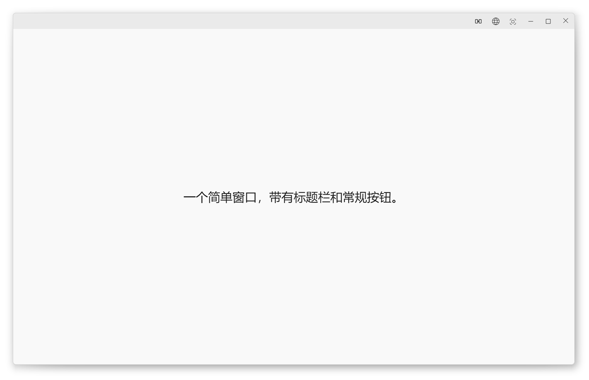
基础窗口Basic Window
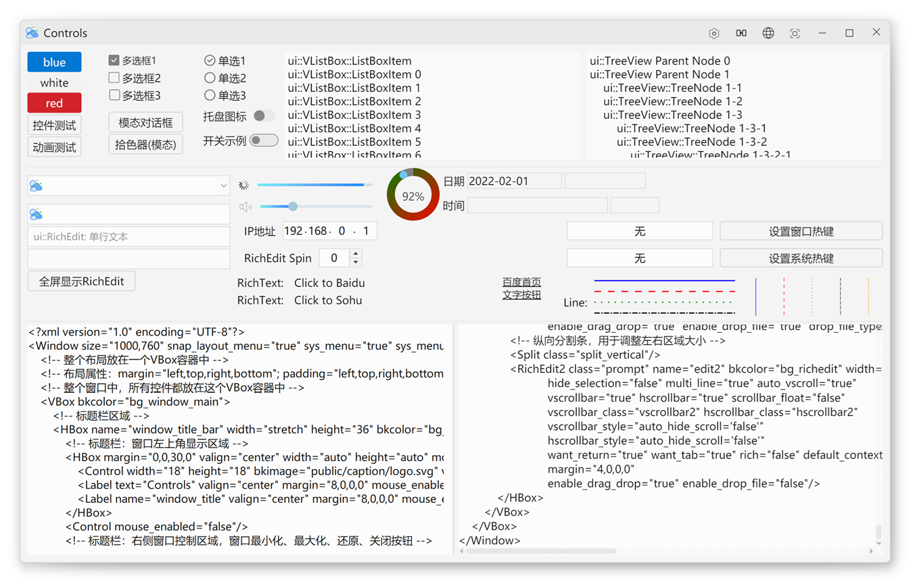
控件大全Controls
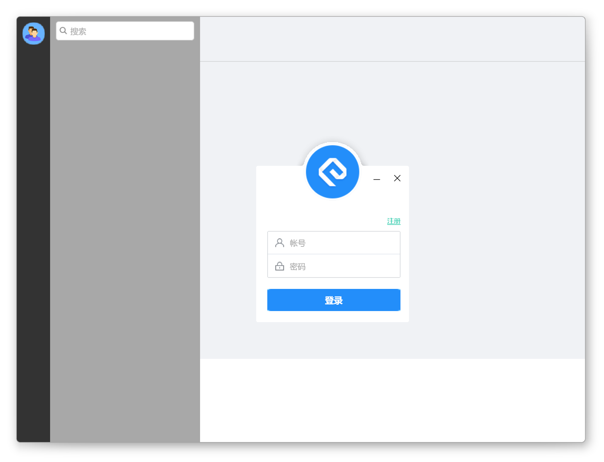
聊天布局Chat Layout
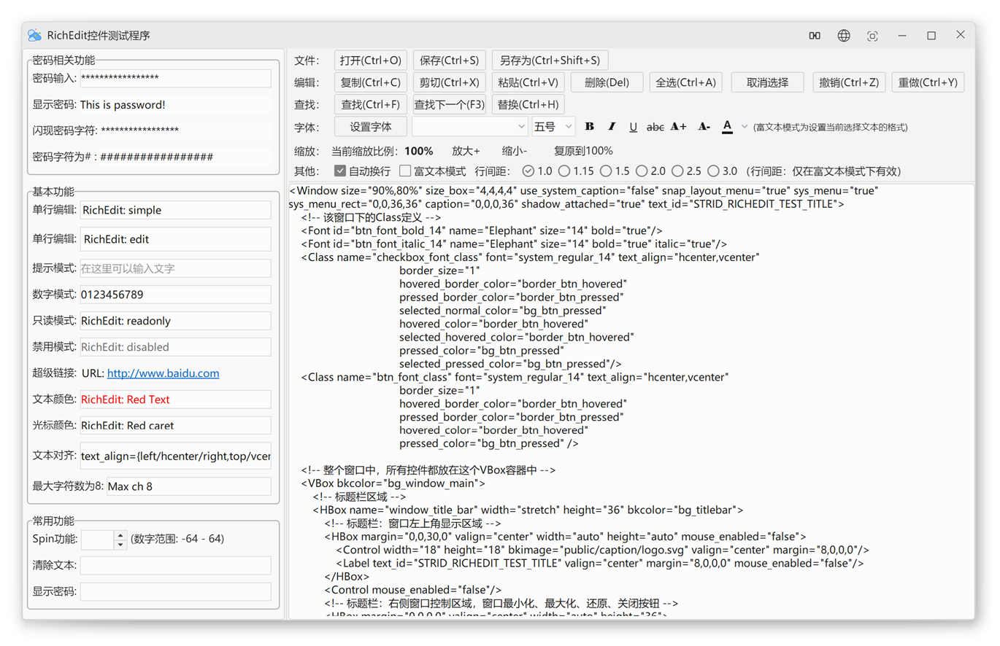
富文本编辑RichEdit
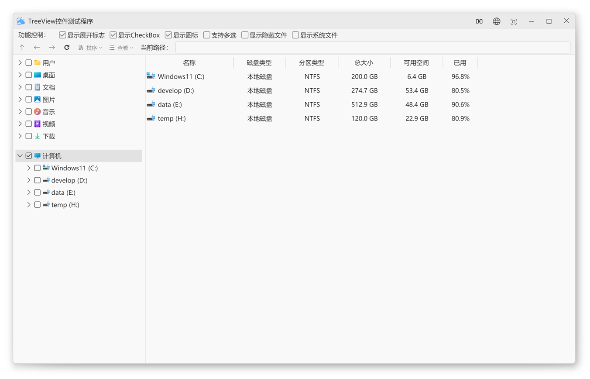
树控件TreeView
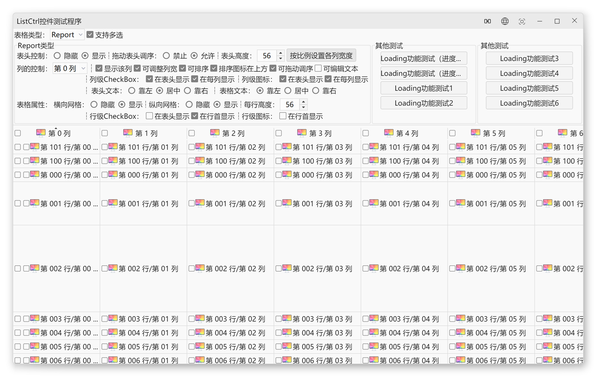
列表控件ListCtrl
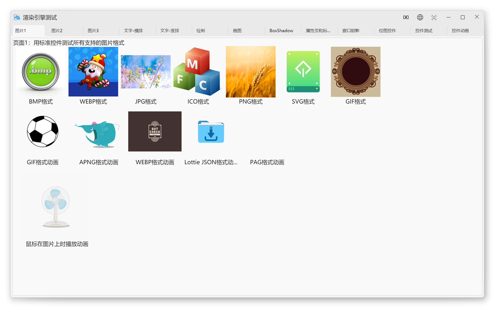
渲染引擎Render Engine
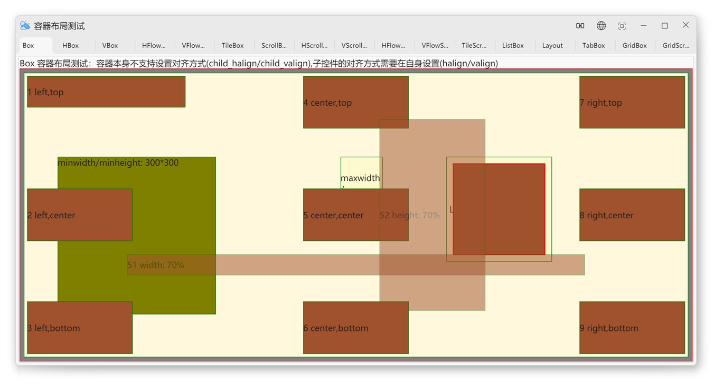
布局展示Layout
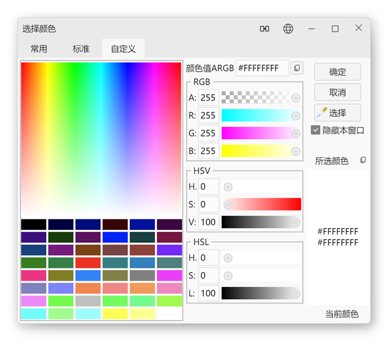
拾色器Color Picker
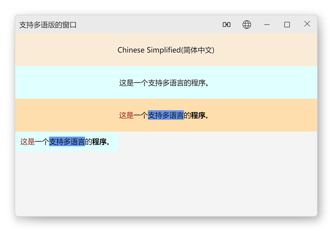
多语言Multi-Language
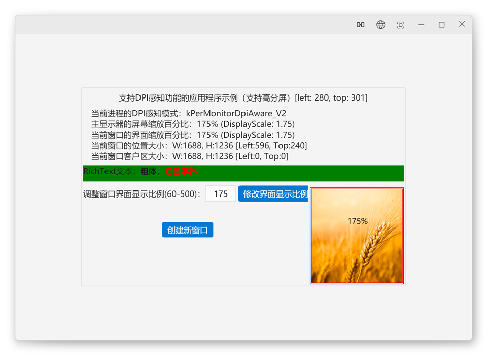
DPI 感知DPI Aware
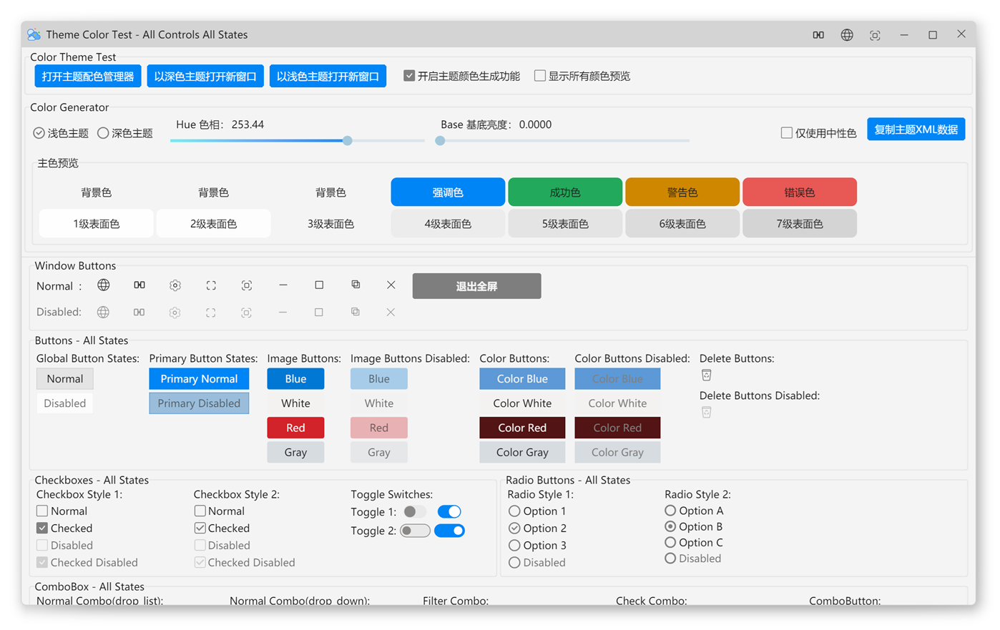
主题色Color Theme
覆盖主流桌面操作系统，支持多种编译器 Covering major desktop operating systems with multiple compiler support
7 / 10 / 11 +
OpenEuler / UOS / Ubuntu / Debian / Fedora / OpenSuseOpenEuler / UOS / Ubuntu / Debian / Fedora / OpenSuse
12 +
最新版Latest
三步即可编译运行示例程序 Three steps to build and run example programs
git clone https://github.com/rhett-lee/nim_duilibcd nim_duilib\build
build_duilib_all_in_one.bat脚本自动下载并编译 Skia 源码和所有依赖库，编译完成后示例程序在 bin 目录中。 The script automatically downloads and compiles Skia source and all dependencies. Example binaries are in the bin directory.
cd nim_duilib/build
chmod +x build_duilib_all_in_one.sh
./build_duilib_all_in_one.sh# 编译完成后，进入 bin 目录运行示例# After build, run examples from the bin directory
cd bin
./basic # 基础窗口示例# Basic window
./controls # 控件大全# All controls
./render # 渲染引擎演示# Render demo配合 AI 编程工具，用自然语言即可完成界面开发 Use natural language to build UIs with AI coding tools
在项目 .trae/skills/ 目录下配置 nim-duilib Skill，TRAE 自动理解框架 API 约定，对话即生成正确代码。Configure the nim-duilib Skill in .trae/skills/. TRAE automatically understands the framework's API conventions and generates correct code from conversation.
注册后在任何项目中使用以下指令，AI 自动生成窗口、布局、控件和事件代码。Register once, use these commands in any project. AI auto-generates windows, layouts, controls and events.
/nim-init 初始化开发环境Init dev environment/nim-duilib-create-window 创建新窗口Create new window/nim-duilib-xml-layout 设计 XML 布局Design XML layout/nim-duilib-add-control 添加控件Add control/nim-duilib-event-handler 事件处理Event handling/nim-duilib-theme 主题定制Theme customization/nim-duilib-resource-pack 资源打包Resource packaging详细的文档帮助你快速上手和深入理解框架 Detailed docs to help you get started and master the framework